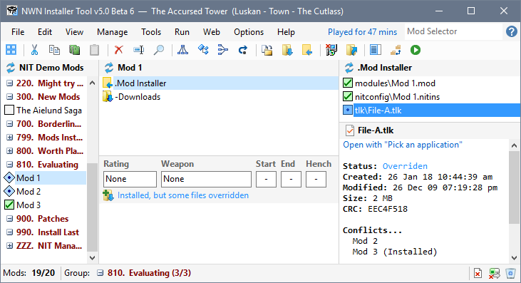
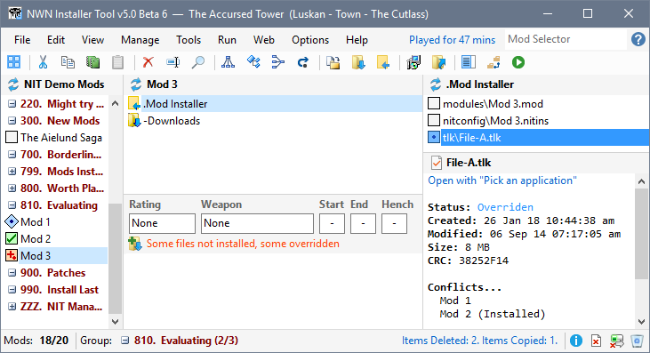
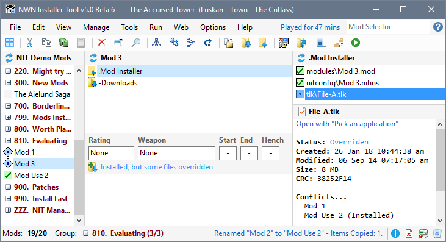
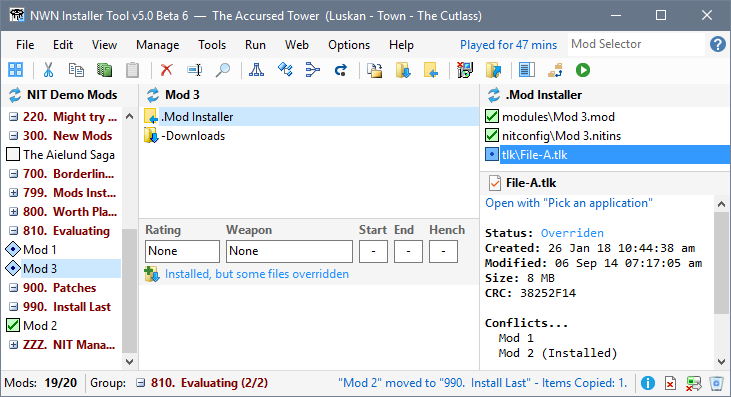
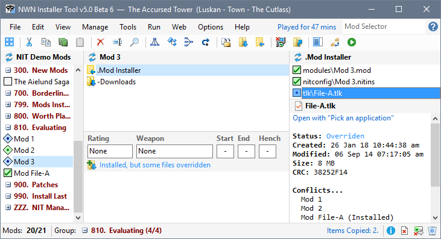

Many Neverwinter Nights mods are self contained and do not have files that conflict with other mods or files installed by Neverwinter Nights. However, there are some file conflicts that occur.
The Installer Tool uses the order in which mods are listed to control which files will be installed. So if different versions of File-A are present in three different Mods, then the order in which they appear dictates which version of File-A is installed. If this is how the mods are listed in the Mod list...
Mod 1
Mod 2
Mod 3
...then File-A from Mod 3 will be installed.

If you uninstall Mod 3, then File-A from Mod 2 is automatically copied to your installation folders.

The Installer Tool sorts Mods alphabetically within their Groups, which are also sorted alphabetically. This means you can use the sort order to determine which of the conflicting Mod files will be installed.
You can rename Mod 2 so that it comes after Mod 3 in order to ensure that Mod 2's File-A is installed.

You can move Mod 2 to another Group that is listed after 810. Evaluating.

This approach allows you to retain the Mod names and still control which files you want installed.
You can create a Mod that contains the conflicting file and use the name or Group to ensure that the file you want is installed.

This approach allows you to retain the Mod names and still control which files you want installed.
Follow these steps to create the Mod for File-A (see Create NIT Mods from Restorers for an illustration of this approach).
Validate conflicting files (Anneal)
Download and install Neverwinter Vault Projects
Download and install Mods from other sites
Review Mod information in added files
Manage Mod file conflicts
Make Mod notes and record information
Add Mods from downloaded files